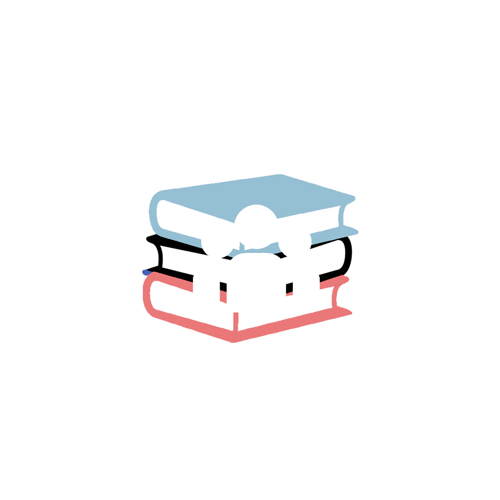

<link rel="preconnect" href="https://fonts.gstatic.com">
<link href="https://fonts.googleapis.com/css2?family=Josefin+Sans:ital,wght@1,200&display=swap" rel="stylesheet">


<ion-content class="content">
  <div class="container">
    <p class="animacionInicial">Sinisterra Luciano</p>
    
    <p class="animacionInicial">4° A</p>
      <div class="bounce1"></div>
      <div class="bounce2"></div>
      <div class="bounce3"></div>
    </div>

</ion-content>
